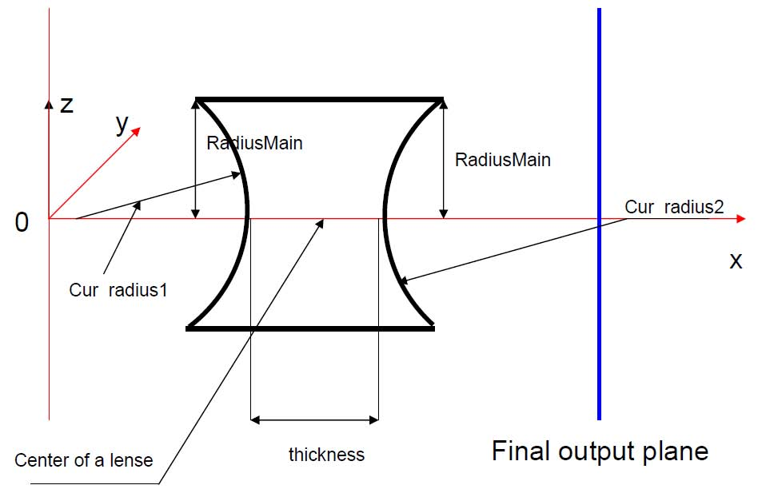
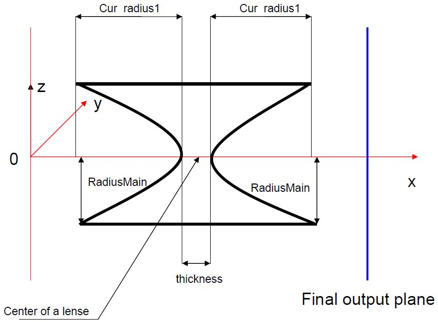
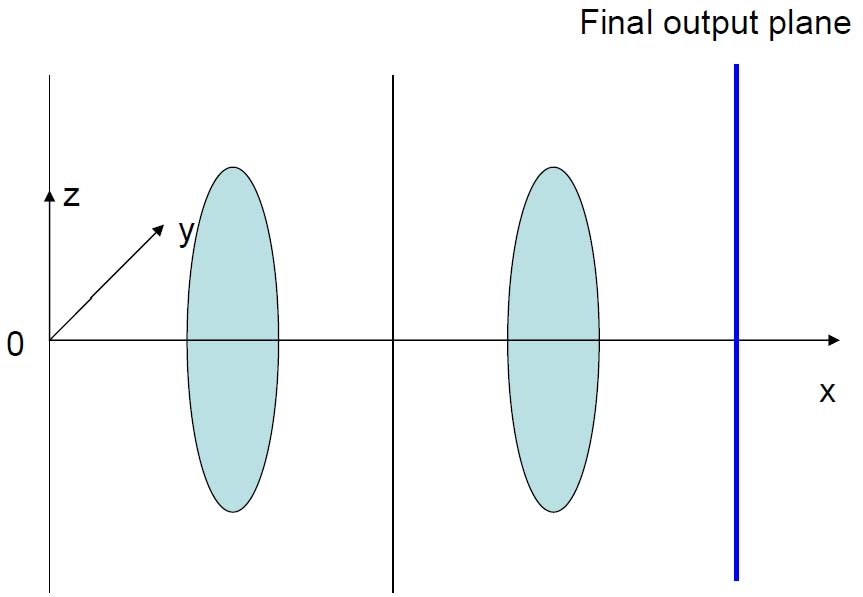
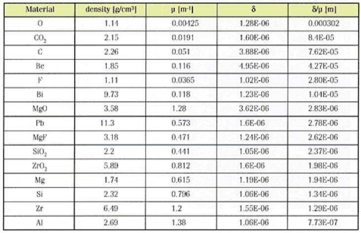
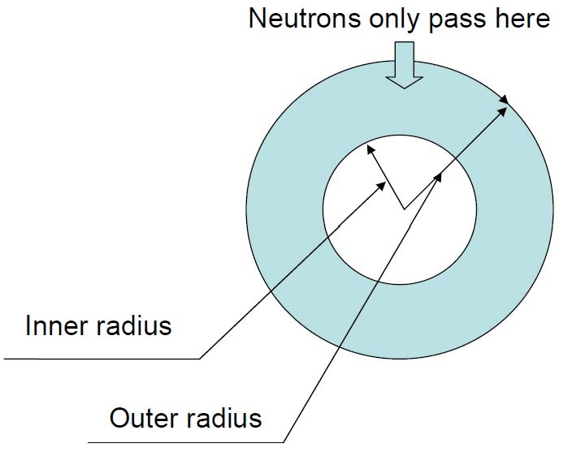

The module lense simulates one or a stack of refractive neutron lenses.
Two kinds of lenses are included in the module: a lense with spherical geometry and one with parabolic geometry.
The geometry has to be chosen as the first step. (See radio button 'Lense surface geometry').
The second step is to describe the geometry of a lense numerically.
Four parameters are included in the module 'Cur_radius1', 'Cur_radius2', 'RadiusMain' and 'Thickness' (see figure 1).
Please note, that, if the parameters 'Cur_radius1' and/or 'Cur_radius2' are given as zero, one of the sides of the lense will be a straight vertical line (or plane).
The parameters 'Cur_radius1' and/or 'Cur_radius2' can have negative values; in this case the surfaces (parabolic or spherical) will be of convex shape
- in contrast to figure 1, where concave shapes are shown.

Figure 1a: spherical lense

Figure 1b: parabolic lense

Figure 2: positioning of the lenses, co-ordinate system and output frame

Table: properties of different lense materials

Figure 3: diaphragma after lense
| Parameter Unit |
Description |
Range or Values |
Command Option |
| Cur_Radius1 [cm] |
Spherical lense: Curvature radius of the first surface of the lense (where the neutrons enter) - see Figure 1a Parabolic lense: distance between parabola at y=z=0 and y=z=RadiusMain for the first surface of the lense (where the neutrons enter) - see Figure 1b |
any | -a |
| Cur_Radius2 [cm] |
Spherical lense: Curvature radius of the second surface of the lense (where the neutrons leave) - see Figure 1a Parabolic lense: distance between parabola at y=z=0 and y=z=RadiusMain for the second surface of the lense (where the neutrons leave) - see Figure 1b |
any | -b |
| RadiusMain [cm] |
Both lenses: radius of the lense - see Figure 1a and 1b | >0 | -c |
| Thickness [cm] |
Both lenses: Thickness of the lense along the central axis | >0 | -A |
| Lense surface geometry | geometry of the lense | 'spherical' 'parabolic' |
-K |
| position center X, Y, Z [cm] |
one lense: position of the lense several lenses: center position of the stack of lenses |
any | -d -e -k |
| output frame X, Y, Z [cm] |
x-, y- and z-position of the output frame (in the input frame) (see figure 2) | any | -s -t -w |
| Refract input |
Refractive index given by the user used if 'material of the lense'='input' (cf. text) |
>0 | -R |
| Refract wave [Å] |
wavelength for the refractive index given by the user used if the refractive index is given by the user (cf. text) |
>0 | -C |
| Absorption part [1/cm] |
macroscopic absorption cross-section given by the user used if 'material of the lense'='input' (cf. text) |
>=0 | -D |
| Scattering part [1/cm] |
macroscopic scattering cross-section given by a user | >=0 | -Q |
| surface roughness [deg] |
amplitude of waviness of a rectangular distribution this value is the maximal angle of deviation of the surface normal from the ideal normal. |
>=0 | -q |
| material of a lense | material of the lense | 'O','CO2','C' 'Be','F','Bi' 'MgO','Pb','MgF' 'SiO2''ZrO2','Mg' ,'Si','Zr','Al' |
-i |
| attenuation activation |
yes: attenuation inside the lense no: no attenuation inside the lense |
'yes' 'no' |
-H |
| Number of lenses | number of lenses in the stack | >=1 | -I |
| Lense number | Lense number for visualisation (0 - means all lenses) | >=0 | -E |
| Number of trajectories | Number of trajectories for the visualisation after the lense | >0 | -x |
| Max X | maximal x value at the ray-tracing picture, 0.0 means auto-calculation | >=0.0 | -S |
| Visual ray-tracing after lense |
no: no visualisation XZ: visualisation using a projection to the XZ plane XY: visualisation using a projection to the XY plane |
'no' 'XZ' 'XY' |
-W |
| Inner radius [cm] |
Inner radius of the diaphragm at the exit of the lenses (see Figure 3) | >=0 | -m |
| Outer radius [cm] |
Outer radius of the diaphragm at the exit of the lenses (see Figure 3) | >0 | -M |
| file name |
name of the output file, into which the entry and exit positions of the trajectories through all lenses are written i.e. color and x,y,z position of entry into lense 1, of exit from lense 1, of entry into lense 2, of exit from lense 2, ... |
- | -p |
| Lense number | Lense number for the output (0 - means all lenses) | >=0 | -v |
| activate output |
yes: activate output of the coordinates for the lense no: no output written |
'yes' 'no' |
-z |
| wavelength [Å] |
wavelength for focal distance calculation | >0 | -r |
| choose formula |
formulae for focal distance calculation: thick: exact formula thin: approximation for thin lenses |
'thick' 'thin' |
-V |
| activate flight |
yes: propagation to the focal distance no: neutrons remain at the lense surface |
'yes' 'no' |
-Y |
Last modified: Tue May 8 17:08:06 MET DST 2001